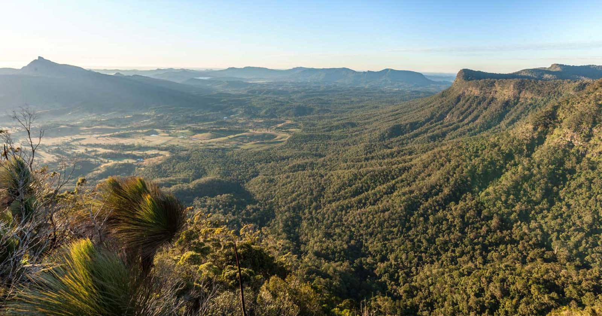
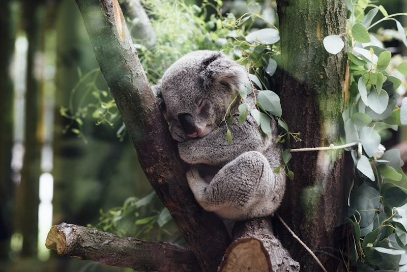
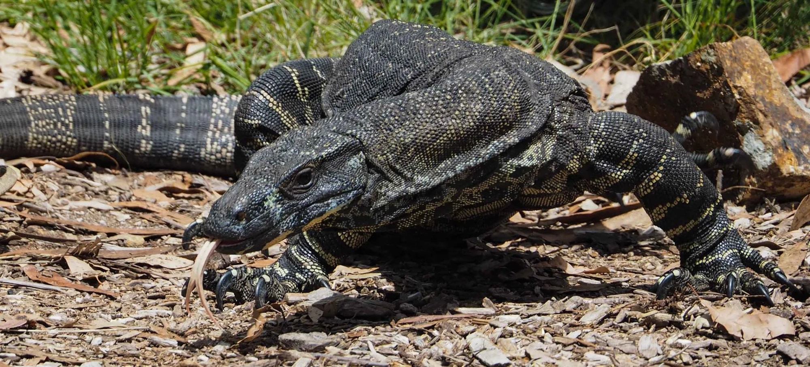
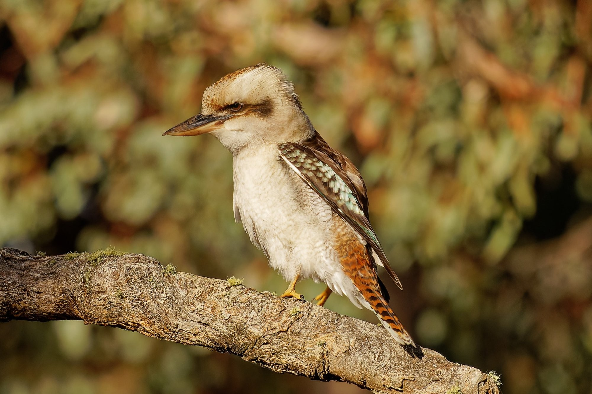
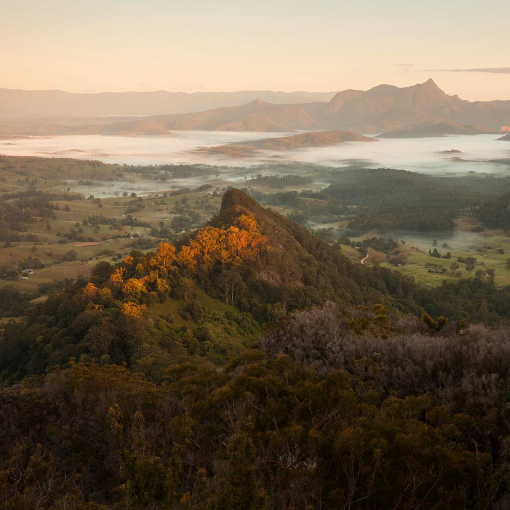
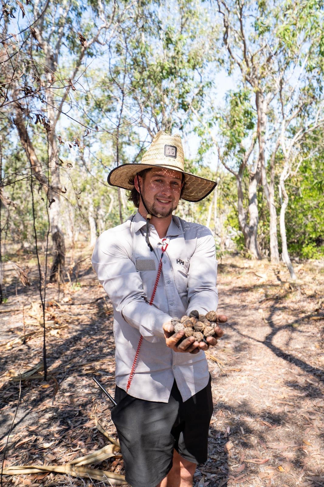
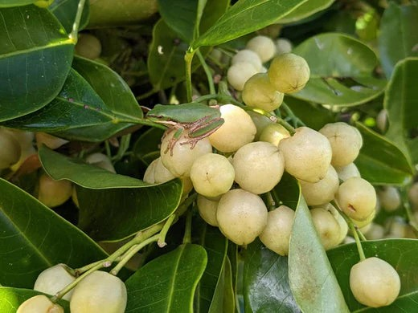
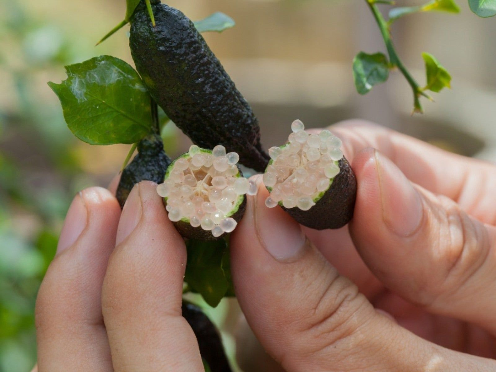
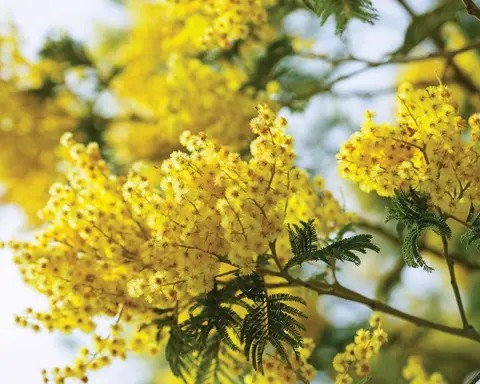

Gidjuum Gulganyi Walk · Private Guided Experiences
A private, fully guided 4-day journey through Gondwanan rainforest on Bundjalung Country — with your own expert local guide, fresh bush-inspired meals, and nothing between you and the land.
About The Walk
The Gidjuum Gulganyi Walk traces the rim of a vast ancient caldera through Mount Jerusalem and Nightcap National Parks — one of Australia's most spectacular new multi-day trails, opened 2024.
Our private experiences are strictly limited to intimate groups, giving you undivided attention, a fully customised pace, and access to the stories and knowledge that only a born-and-raised local guide can offer.
The walk at a glance
Four days. Three nights. 42 kilometres through Gondwana World Heritage rainforest, ending at the thundering 100m Minyon Falls.

Spotted in the eucalyptus canopy

Goanna — ancient and unhurried

Dawn alarm clock of the bush

Sweeping views of Mt Wollumbin and the Tweed Caldera greet you on Day 2 — one of the most breathtaking panoramas in Australia.
Jarien was born and raised in this country. He didn't discover the Northern Rivers hinterland — he grew up in it. His knowledge of the land, its plants, its animals and its stories comes not from a guidebook but from a lifetime of living here.
Before returning home, Jarien honed his craft guiding in the Kimberley — one of Australia's most demanding and remote wilderness regions. That experience forged a calm, highly skilled guide equally at home on technical terrain as he is quietly pointing out a lyrebird or pulling a bush tucker snack straight from the understorey.
His passion for native bush foods brings something genuinely rare to your journey: tastings and stories woven throughout each day, and meals that draw on the very landscape you're walking through. Every evening in camp, Jarien leads a bush survival talk — sharing which plants sustain life, which to avoid, and how the land feeds those who know how to read it.

"This country has been walked for millennia. My job is to help you feel that — not just see it."
— Jarien, your guideAll packages are private — your group only. Prices per person based on group of 2. Larger groups receive a per-person reduction.
Based on 2 guests · 4 days / 3 nights
Based on 4 guests · 4 days / 3 nights
Based on 4–6 guests · 4 days / 3 nights
For tens of thousands of years, the Bundjalung people walked this country and knew exactly what it offered — which plants healed, which seeds sustained, which fruits could be eaten raw and which needed preparation to be safe. That knowledge is a form of literacy as complex and vital as any written language.
Jarien brings this literacy to every walk. Each day on the track includes bush tucker tastings and plant identification. Each evening in camp, he leads a dedicated Bush Food & Survival Talk — covering the essential skills of reading a landscape for food, water and shelter, and the cultural significance of the plants around you.
It's not just fascinating — it's the kind of knowledge that changes how you see the natural world forever.
Knowing what you can eat in the bush is the difference between panic and calm in an unexpected situation. Jarien covers edible plants, safe water sourcing, and basic shelter — practical, engaging and grounded in deep local knowledge. By day four, you'll walk out of Minyon Falls with eyes completely transformed.

Acronychia acidula — intensely sour citrus fruit of the subtropical rainforest canopy

Microcitrus australasica — split open to reveal pearl-like citrus vesicles, the caviar of the bush

Acacia species — a staple of Aboriginal diets for millennia, rich nutty flavour
Ground wattleseed has been a staple of Aboriginal diets for millennia — high in protein and fat with a rich, nutty, coffee-like flavour. Jarien uses it in camp cooking throughout the walk.
Found along the rainforest edge, finger limes burst open to reveal tiny translucent pearls packed with intense citrus flavour. One of Australia's most prized bush foods — Jarien will show you exactly where to find them on the track.
Prostanthera species thrive in the region's rich volcanic soil. Jarien incorporates them in camp meals and teaches you to identify them by scent as you pass through.
Your dedicated camp cook travels ahead each day to set up camp and prepare fresh, seasonal food — no dehydrated packets, no compromise. Budget covers all ingredients, cook wages and transport for the full walk.
Damper with wattleseed butter, eggs cooked over coals, fresh fruit, wild herb tea — fuel that feels like ceremony.
Jarien stops throughout the day to share what the land provides — lemon aspen, finger lime, native thyme, macadamia. Tasting the forest as you walk it.
Slow-cooked stews, fire-baked breads, charred local vegetables and native spices. Every dinner is different, every meal made with care.
Specialty coffee brewed by hand each morning. Wild herb infusions — lemon myrtle, bush mint — collected as you walk.
Plant-based, gluten-free, or any other requirement — let us know at booking. Your cook will plan your entire menu around you.
A second team member travels with Jarien on every private walk — managing food logistics, camp setup and all meals so Jarien stays fully present with you on the track.
Every day brings a different world — volcanic ridgelines, ancient Antarctic beech groves, creek gorges, rainforest cathedral. Jarien shapes the pace around you.
Each evening finishes with a campfire Bush Food & Survival Talk — one of the most memorable parts of the entire journey.
Day 1 · ~7km
Meet Jarien in Uki for a morning coffee and cultural introduction. Stop at the ethereal Unicorn Falls before entering the forest. Your first bush tucker tasting as you walk.
🍕 Lunch on trail · Camp fire dinner · Night 1: Sand Ridge Camp
Day 2 · ~16–18km
The most demanding and most spectacular day. High ridge walking with sweeping views of Wollumbin and the Tweed Caldera. Jarien shares Bundjalung stories of the peaks and points out ridge-dwelling edible plants along the way.
🍕 Trail snacks · Summit lunch · Hearty camp dinner · Night 2: Yelgun Kyoomgun
Day 3 · ~12km
A more forgiving day deep in the forest. Swim in a secluded creek gorge. Wanganui Gorge lookout opens dramatically. Extended bush tucker foraging walk as you approach camp.
🍕 Bush breakfast · Trail lunch · Bush tucker feast · Night 3: Weeun Weeun
Day 4 · ~11.9km
Walk through Nightcap National Park's palm-shaded gorges to the thundering 100m Minyon Falls lookout. Side trip to the base of the falls. Final bush tucker walk before transfers back.
🍕 Final camp breakfast · Celebration lunch at falls · Transfers depart ~3pm
Return transfers from Byron Bay, Mullumbimby, Ballina Airport, or Gold Coast Airport included in all packages.
Elevated hardwood tent platforms in certified NSW National Parks campgrounds. Premium tents and quality bedding supplied.
Day pack, walking shoes, rain jacket, personal items. A detailed packing list is sent on booking. We handle everything else.
Grade 4 — moderate to challenging. Day 2 is strenuous (18km, 1000m elevation). Solid fitness and comfortable with long walking days required.
Private departures can be scheduled year-round, subject to availability. Enquire now to check dates and hold your group's preferred experience.
✦ Enquiry sent — Jarien will be in touch within 24 hours.
Something went wrong. Please email jarienkstar@gmail.com directly.